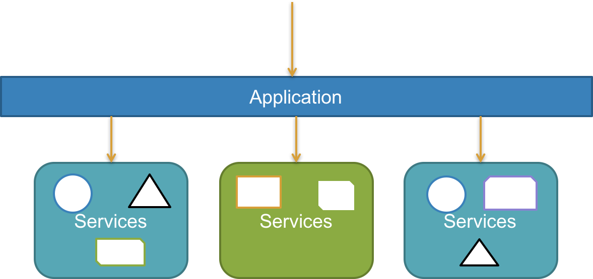

Software design principles for evolving architectures
firat atagun
How to navigate
- Use arrow keys to browse the slides
- CTRL+SHIFT+F to search
- Press ESC to view all slides
Table of Contents
This is not yet another monolith to microservices presentation.
General Principles
Dry
Every knowledge in a system must have a single authoritative, unambiguous representation. – Pragmatic Programmers.
YAGNI
Embrace principle of last responsible moment.
Postpone decisions until you can’t postpone them any further.
KISS
Simple keeps focus.
Good software design hides inherent complexity and avoids accidental complexity.
Principle of Cohesion
Removing and reducing coupling creates better design.
What you need is high cohesion and loose coupling.
Avoid Long Methods
Long methods are :
- Hard to test
- Hard to reason
- Hard to debug
- Hard to change
- Increases coupling and reduces cohesion
SLAP
Single level of abstraction principle with compose method pattern creates better design and increases usability.
Law of demeter
Principle of least knowledge aka Law of demeter tells that consumer of a method or a class shouldn't know or use the inner implementation details.
Principle of Least Surprise/Ashonisment
Code should work correctly or incorrectly in deterministic ways. Do not surprise consumers of your API.
If a software has high astonishment factor, redesign it.
SOLID Principles
SRP : Single Responsibility Principle
A class or a method should have only one reason to change.
OCP : Open Closed Principle
A class should be open for extension and closed for modification.
LSP : Liskov Substitution Principle
Classes that implements the same interface or class can be substituted.
ISP : Interface Segregation Principle
Interfaces should be specialized but not too special.
DI : Dependency inversion Principle
Depend on abstractions not on implementations.
How to explain dependency injection to 5 yearsold
Ask for things, do not look for things.
Testable code
Code that can be tested in isolation, verifiable, deterministic and proved to be working properly at all times.
Testable code increases cohesion and loose coupling while making software maintenance easier.
Why should we invest in developing testable code and tests?
Testable code and associated tests reduces bugs in development and maintenance
Testing helps reduce effort and time of developing and maintaining our software.
Fact: mainintaining software takes much more time and effort than developing it.
Even though there is time and effort cost associated to creating tests, they pay of in the long time and increase trust to the software.
Testing our code helps improve the design of our software.
Testing can help educate developers. It can be considered as documentation.
If a developer wants to learn about a software, reading tests can help as much as reading documentation.
Tests increases the trust and confidence in our software.
Types of tests
What
- unit
- integration
- component
- service
Why
- functional
- acceptance
- smoke
How
- automated
- manual
Seams
Building blocks of software in isolation. Can be thought of context or bounded context
Object construction
Constructors shouldn't contain any logic. Constructors should be as simple as possible.
There are injectables and newables. Injectables are like services that implements an interface. Newables usually represents entity. Injectables can accept other injectables but shouldn't accept newables. Newables can accept other newables but shouldn't accept any injectables.
Use polymorphism over conditionals
if you see a repeating pattern of same conditionals you can extract it into polymorphic constructs. Break complex classes to smaller simpler classes.
Law of demeter
Talk to your friends. Don't talk to strangers.
var customer = _customerService.GetCustomer(id);
var userName = Environment.GetSecurity().GetLogin.GetUser().UserName;Except Builder pattern this is a bad practice because it violates the law of demeter and makes testing harder.
Code Smells
Rigidity
If there is tension for the software to change, then your software is suffering from rigidity.
Rigidity arises from coupling objects and components in such a way that making a change becomes tedious.
Rigidity causes fragility
Fragility
If your breaks easily, causes failures, that is a sign of fragility.
It is very easy to detect a fragile code such as a small change in your software breaks many other dependencies.
Immobility
If your code is hard to reuse, that is immobility.
Use interfaces more. Balance generic classes. Create re-usable components.
Viscocity
If your software is easy to hack but hard to fix properly, that is a bad sign.
Maintaining principles and practices is challenging, therefore sometimes developers hack their way through.
Complexity
Software engineers love complicated stuff, they enjoy it.
However, Everything that is too complicated is destined to fail. If something feels complicated it is most probably wrong.
Duplication
Code duplication is a typical symptom of a bad design.
Duplication of code causes a bug to show up in multiple places, thus requires duplication of effort as well.
Opacity
If your software is hard to understand, that is a bad sign.
Your software should be clear, concise, easy and should read like a poem.
Architecture
Architecture is set of design decisions and shared understanding of a system.
Big up front design
Architectural decisions should be balanced. Big up front design is generally a bad practice. Just enough design is usually good enough. "Just enough" is based on your intuition.
Prioratize Features based on Value and architectural impacts.
Design stamina hypothesis

Reversibility
An architectural decisions should be reversible.
Architectural Patterns
Source code
Layered Architecture

Layered Architecture
Feature Based Slicing

Feature Based Slicing
Kernel/Plugin Architecture

Event Driven Architecture
Mediator

Event Managers
CQRS
Command Query Responsibility Segregation
MicroServices
Architecture Comparison